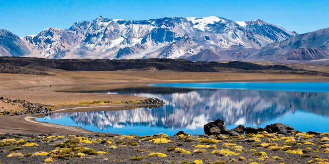
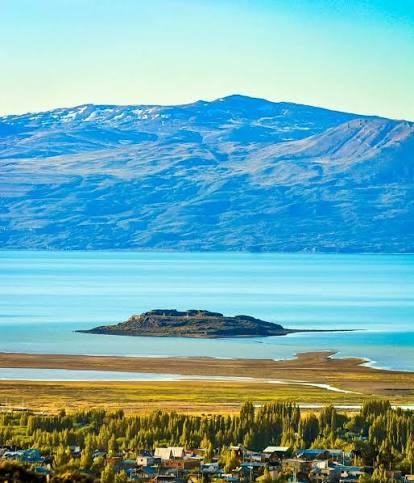

Hay paisajes que te tocan el alma y personas que te enseñan a volver a amar
la vida con más fuerza. Argentina es ese lugar. Es un país enorme,
lleno de sol, montañas, ríos y una gente que sabe recibir
a cada visitante con calidez, orgullo y ternura.
Desde el humo del mate hasta la vista del cielo más azul, cada rincón nos
recuerda que la belleza no siempre está lejos: a veces está justo al lado,
esperando ser descubierta.
Cuando hablamos de Argentina, no solo hablamos de ciudades ni de monumentos. Hablamos de la emoción del camino, del viento en los Andes, del abrazo de una familia en una plaza, del sabor de un asado compartido y de la sensación de pertenecer a algo grande, profundo y lleno de historia.
Provincias que enamoran

Bariloche
El paisaje parece salido de un sueño. Los lagos, los bosques de cipreses, la nieve en los cerros y la calma del aire hacen de Bariloche un lugar donde el corazón se queda quieto por un momento, admirando lo hermoso.

Salta
Salta tiene un encanto profundo, lleno de historia, colores y gente amable. La experiencia más memorable fue recorrer sus calles y sentir la energía de un lugar donde la tradición y la belleza se viven cada día con orgullo.

Mendoza
El sol, los viñedos y la tranquilidad del paisaje convierten a Mendoza en un lugar inolvidable. Es una provincia donde la naturaleza y el trabajo de la gente se sienten con tanta fuerza que se vuelve imposible no enamorarse de ella.

El Calafate
Aquí la grandeza de la naturaleza se hace visible en cada camino. El hielo, los glaciares y la inmensidad del paisaje dejan una sensación tan profunda que parece imposible describir en palabras. Es una experiencia que te cambia.
La gente que hace a Argentina aún más hermosa
Pero la verdadera magia de Argentina no está solo en sus paisajes. Está en
la gente. En la sonrisa de un vecino, en la hospitalidad del campo, en la
amabilidad de la calle, en ese gesto cotidiano que te hace sentir en casa.
La gente argentina tiene una forma especial de compartir alegría, de recibir,
de contar historias y de hacer que cada visita sea memorable. Y eso es lo que
termina conquistando el corazón: no solo la grandeza del país, sino la forma
en que nos recibe, nos abraza y nos hace sentir que, aunque uno se vaya,
siempre vuelve con un pedacito de Argentina dentro.